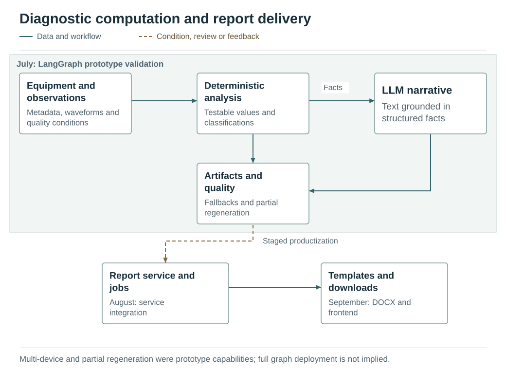

I led data preparation, operating-state interpretation, fault analysis, severity and RUL interpretation, turning internal analysis into usable customer reports. Skills standardized steps, notebooks checked assumptions, and a LangGraph prototype tested multi-device processing, partial reruns and failure fallback.

- 01 · DeliveredCustomer analysis report
Field problem, analytical definitions and human review
- 02 · EstablishedReusable skills
Standard analysis steps and internal/external report conversion
- 03 · Prototype validatedLangGraph workflow
State management, multiple devices and partial regeneration
- 04 · Platform integration completeHarbor AI 2.0 report service
Service generation, platform job dispatch and frontend downloads
Technical details and validation scope
Validate analysis before standardizing the workflow
Used notebooks to check transients, stopped-equipment data, sampling definitions and RUL confidence. Internal reports retain analytical evidence; external reports adapt language and layout without reinterpreting the same numbers.
Turn one task into a rerunnable system
The July prototype retained validated scripts and quality rules as LangGraph nodes. Deterministic code generates values and tables; the LLM writes narrative. Review triggers regeneration only where needed, insufficient data causes explicit fallback, and each device retains separate state.
Respond to customer feedback
I converted customer observations about load and vibration into testable questions, reanalyzed by operating condition and delivered explanations. Statistical associations remain distinct from equipment causes, with required field information listed explicitly.
My responsibility and current status
I led diagnostic methods, report structure, quality criteria and product direction. Reusable analysis from customer reports was validated through the LangGraph prototype; I then worked with engineers and AI agents to integrate services, platform dispatch, DOCX and downloads.
Results and current scope
The service generated reports from real data and was checked for numerical traceability and missing-data fallback. Multi-device and partial regeneration were validated in a separate prototype. Full field orchestration, deployment and customer acceptance need further verification.